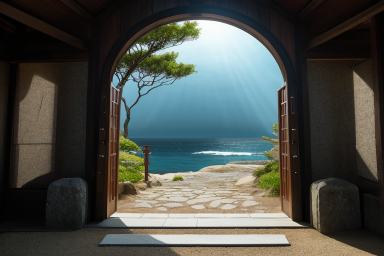
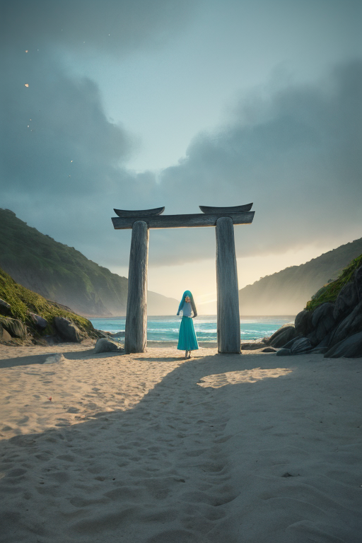
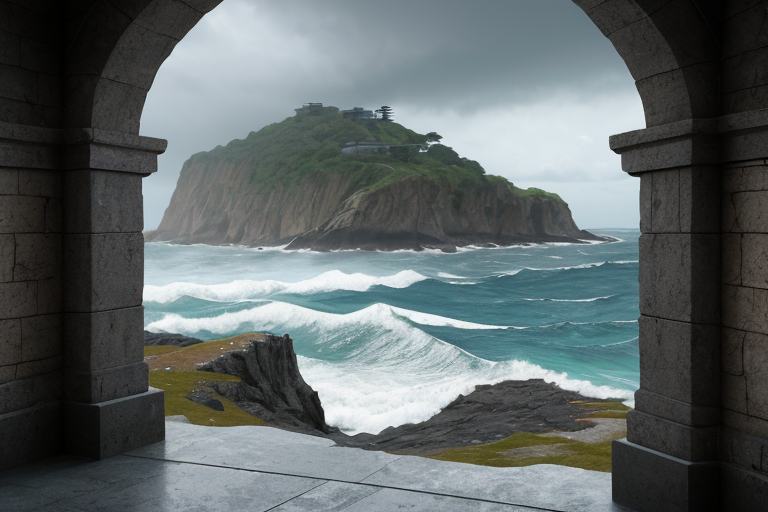
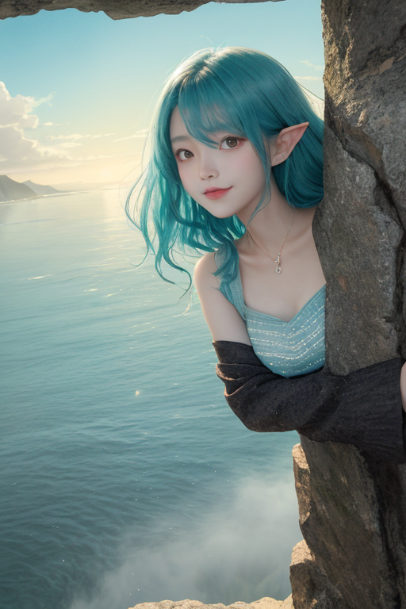
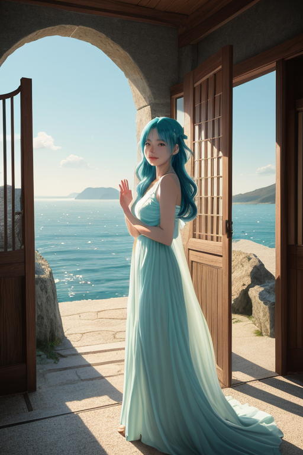

第一章 現実の千葉
あなたはまだ気づいていない。この土地にも、王がいることを。
成田山新勝寺の石段は、今日も参詣客の足音で磨かれていた。潮風が遠くから、九十九里浜の砂礫を運び、境内の香煙に混ざる。ここは入口の土地だ。房総半島は古来、海を渡る者、信仰を求める者、すべてを受け入れる巨大な門であった。その地脈の最深部、養老渓谷の静謐な森の奥で、何かが封じられ、深く眠っている。歪みの列島を守る47の王の一人、チバリア・ゲートは、その封印の上に座していた。
彼は門の王。社交的で、すべてを歓迎する性質を持つ。しかし今、その表情には微かな、理解しがたい不穏が漂う。彼の王国「チバリア・ゲート」は、本来、人と人、土地と海、現実と非現実とを結ぶ「入口」を司る。だが、この世界線「海門封」では、その力の核たる「海門」が、太古の昔から厳重に閉ざされたままなのだ。潮風は吹き、鋸山の岩肌は日に照らされ、銚子の港では醤油の香りが漂う。すべてが日常の、現実の千葉である。ただ、王だけが知る。この平穏の底で、封じられた「何か」が、潮の満干と同期して、ゆっくりと呼吸を始めていることを。

第二章 歪みの兆候
九十九里浜の砂は、今日も細かく、白く、潮風に撫でられていた。観光客の笑い声、サーファーの歓声、それらはすべて、この海岸線の日常の一部だ。しかし、門王チバリア・ゲートの耳には、もう一つの音が届いていた。波の音の、ごくわずかな不協和音。本来、この「海門封」世界線では、海と陸の境界は単なる物理的な線でしかないはずだった。だが今、その境界が、微かに、しかし確実に「門」としての性質を帯び始めている。潮が引いた後の砂地に、時折、見知らぬ貝殻や、この海域に棲まないはずの海藻の断片が打ち上げられる。それは、封じられた海門の向こう側から、ごく微量の「何か」が滲み出してきている証だった。
妖精ゲイリアは、成田山新勝寺の参道で、すれ違う人々の「出会い」の糸を微調整していた。しかし、彼女の手にかかる糸は、時に理由もなく絡まり、あるいはぷつりと切れる。それは、この土地の「入口」としての機能が、予期せぬ方向に、制御不能に活性化し始めている兆候である。歪みは、静かに、確実に進行していた。

第三章 王の葛藤
鋸山の山頂から、東京湾と房総の海を一望する。門王チバリア・ゲートは、その視界のすべてが「入口」であることを知っていた。海は外界への門、空は天への門、山道は人々の心への門。彼の役割は、それらを適切に「開閉」し、歪みを調整することだった。
しかし今、封じられた海門の向こうから滲む力は、単なる歪み以上のものを感じさせた。それは、長く閉ざされたことによる「渇望」に似ていた。解放すれば、一時的に大きな歪みを生むかもしれない。だが、このまま封じ続けることが、より深い亀裂を生んでいないか。
「あなたの入口はどこか？」
その問いは、今や彼自身への問いかけとなっていた。王としての責務か、この土地と共に進化し始めた感情か。潮風が、びわの葉を揺らし、白と水色の紋章が微かに輝く。彼は、答えの代わりに、九十九里浜に打ち寄せる波の力を、ほんの一瞬、ほんの一片だけ、通してみた。海が、深く息をした。

第四章 妖精との対話
鋸山の山頂近く、岩肌に刻まれた百尺観音の足元で、ゲイリアが潮風に混じって現れた。彼女の声は、いつもの社交的な調子を失い、静謐で重かった。
「門は、開くためだけにあるのではありません。時に、閉じることも、その役割です」
彼は、かつて房総半島の沿岸に幾つもあった小さな入り江のことを語り始めた。漁師たちが海の恵みと脅威の両方を受け入れる、生活の入口。しかし、あまりに大きな津波の記憶が、いくつかの入り江を「海門封」へと導いた。自然の猛威を前に、人間が選んだのは、完全な防御ではなく、ある種の「調整された受け入れ」だった。力を封じ、その代わりに、歪みを一点に集中させ、他の地域への波及を最小限に留める。それが、この土地の王に課せられた、苦渋の調整だった。
「でも、封じたものは、どこへ行くのでしょう？」ウミナリアが、潮門の微かな軋みのような声で問うた。「潮風に乗せて、落花生の畑に、びわの木に、醤油蔵の暗がりに、少しずつ染み込んでいく。それは、消えたわけではない。ただ、形を変えて、この土地の『質感』になっていくのです」
妖精たちの言葉は、封印が単なる「閉ざす」行為ではなく、別のかたちでの「受け入れ」であることを示していた。しかし、受け入れたものの行方は、まだ誰にもわからない。

第五章 微調整と余韻
鋸山の山頂から、九十九里浜の弧を一望できる。門王は、目を閉じた。掌に宿る水色の微光は、かつての歓迎の輝きではなく、静かな抑制の色合いへと変わっていた。歪みの調整は続く。地震の波を一段階緩め、津波の先端を数秒遅らせる。それは、巨大な扉を一ミリ閉じるような、気の遠くなる作業だった。
修復の代償は、訪れた。かつて門を通して感じた、無数の「出会い」の予感。潮風に混じる落花生の土の香り、びわの甘い匂い、銚子の醤油蔵から漂う深い塩気——それらは今、微かに色褪せて感じられる。感情を得た王が、感情の一部を扉の錠として差し出したのだ。歓迎の心は薄れないが、その感触が、どこか遠い記憶のように、静かに封じ込められていく。
養老渓谷のせせらぎが、その余韻を運んでくる。完全な封印ではない。ほんの少し、隙間は残されている。潮風がその隙間を通り、新たな「入口」の可能性を、かすかに囁き続ける。
あなたの町にも、王がいる。